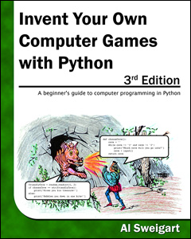
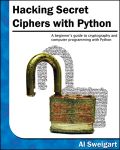
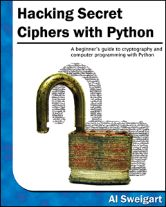

Støtte forfatteren: Køb bogen på Amazon or
bogen / ebook-bundtet direkte fra No Starch Press.

Læs forfatterens andre gratis python bøger:

 
I dette kapitel dækker jeg ordbogen datatypen, som giver en fleksibel måde at få adgang til og organisere data. Derefter lærer du at kombinere ordbøger med din viden om lister fra det foregående kapitel, hvordan du opretter en datastruktur til at modelere et tic-tac-toe bord.
Som en liste er en dictonary en samling af mange værdier. Men i modsætning til indekser for lister kan indekser for ordbøger bruge mange forskellige datatyper, ikke kun heltal. Indekser for ordbøger kaldes nøgler, og en nøgle med tilhørende værdi kaldes en nøgleværdipar.
I kode er en ordbog skrevet med tuborg klammer, {}. Indtast følgende i den interaktive kommando linje:
>>> myCat = {'size': 'fat', 'color': 'grey', 'disposition': 'loud'}
Dette tildeler en dictonary til variablen myCat. Denne dictonary's nøgler er 'size', 'color' og 'disposition'. Værdierne for disse nøgler er 'fat', 'grey' og 'loud', henholdsvis. Du kan få adgang til disse værdier gennem deres nøgler:
>>> myCat['size'] 'fat' >>> 'My cat has ' + myCat['color'] + ' fur.' 'My cat has grey fur.'
Ordbøger kan stadig bruge heltalværdier som nøgler, ligesom lister bruger heltal til indekser, men de behøver ikke starte ved 0 og kan være et hvilket som helst nummer.
>>> spam = {12345: 'Luggage Combination', 42: 'The Answer'}
I modsætning til lister er poster i dictonary uordnet. Det første element i en liste med navnet spam ville være spam[0]. Men der er ikke noget "første" emne i en dictonary. Mens rækkefølgen af emner er afgørende for at afgøre, om to lister er de samme, betyder det ikke noget i hvilken rækkefølge de nøgleværdige par er skrevet i en dictionary. Indtast følgende i den interaktive skal:
>>> spam = ['cats', 'dogs', 'moose'] >>> bacon = ['dogs', 'moose', 'cats'] >>> spam == bacon False >>> eggs = {'name': 'Zophie', 'species': 'cat', 'age': '8'} >>> ham = {'species': 'cat', 'age': '8', 'name': 'Zophie'} >>> eggs == ham True
Da ordbøger ikke bestilles, kan de ikke skives som lister.
Hvis du forsøger at få adgang til en nøgle, der ikke findes i en ordbog, vil det resultere i en KeyError fejlmeddelelse, ligesom en liste uden for området har IndexError fejlmeddelelsen. Indtast følgende i den interaktive skal, og bemærk den fejlmeddelelse, der vises, fordi der ikke er nogen 'farve' nøgle:
>>> spam = {'name': 'Zophie', 'age': 7} >>> spam['color'] Traceback(most recent call last): File "<pyshell#1>", line 1, in <module> spam['color'] KeyError: 'color'
Selvom ordbøger ikke er ordnet, kan det faktum, at du har vilkårlige værdier for tasterne, give dig mulighed for at organisere dine data på magtfulde måder. Tænk du ønskede, at dit program skal gemme data om dine venners fødselsdage. Du kan bruge en ordbog med navnene som nøgler og fødselsdage som værdier. Åbn et nyt filredigeringsvindue og indtast følgende kode. Gem det som birthdays.py.
❶ birthdays = {'Alice': 'Apr 1', 'Bob': 'Dec 12', 'Carol': 'Mar 4'}
while True:
print('Enter a name:(blank to quit)')
name = input()
if name == '':
break
❷ if name in birthdays:
❸ print(birthdays[name] + ' is the birthday of ' + name)
else:
print('I do not have birthday information for ' + name)
print('What is their birthday?')
bday = input()
❹ birthdays[name] = bday
print('Birthday database updated.')
Du opretter en begyndende ordbog og gemmer den i birthdays ❶. Du kan se om det indtastede navn eksisterer som en nøgle i ordbogen med søgeord ❷, som du gjorde for lister. Hvis navnet står i ordbogen, får du adgang til den tilknyttede værdi ved hjælp af firkantede parenteser ❸; Hvis ikke, kan du tilføje den ved hjælp af den samme firkantparanteser kombineret med tildelingsoperatøren ❹.
Når du kører dette program, vil det se sådan ud:
Enter a name:(blank to quit) Alice Apr 1 is the birthday of Alice Enter a name:(blank to quit) Eve I do not have birthday information for Eve What is their birthday? Dec 5 Birthday database updated. Enter a name:(blank to quit) Eve Dec 5 is the birthday of Eve Enter a name:(blank to quit)
Selvfølgelig glemmes alle de data, du indtaster i dette program, når programmet afslutter. Du lærer at gemme data til filer på harddisken iChapter 8.
Der er tre ordbogs metoder, der returnerer liste lignende værdier af ordboksens nøgler, værdier eller begge nøgler og værdier: keys(), values() og items(). Værdierne returneret af disse metoder er ikke sande lister: De kan ikke ændres og har ikke en append() metode. Men disse datatyper( dict_keys, dict_values, og dict_items, respektivt) kan bruges i for løkker. For at se, hvordan disse metoder fungerer, skal du indtaste følgende i den interaktive skal:
>>> spam = {'color': 'red', 'age': 42} >>> for v in spam.values(): print(v) red 42
Her gentages en for loop for hver af værdierne i spam ordbogen. En for loop kan også gentage over nøglerne eller begge nøgler og værdier:
>>> for k in spam.keys(): print(k) color age >>> for i in spam.items(): print(i) ('color', 'red') ('age', 42)
Ved hjælp af tasterne(), værdierne() og elementer() metoder, en til loop kan gentage sig over nøgler, værdier eller nøgleværdipar i henholdsvis en ordbog. Bemærk, at værdierne i dict_items -værdien returneret af elementer() -metoden er tuples af nøglen og værdien.
Hvis du vil have en liste fra en af disse metoder, skal du sende sin listelignende returværdi til funktionen list(). Indtast følgende i den interaktive skal:
>>> spam = {'color': 'red', 'age': 42} >>> spam.keys() dict_keys(['color', 'age']) >>> list(spam.keys()) ['color', 'age']
listen(spam.keys()) linjen tager værdien dict_keys tilbage fra keys( ) og sender det til list(), som derefter returnerer en listeværdi på ['color', 'age'] .
Du kan også bruge felere tildelings nummeret i en for løkke ved at tildele nøglen og værdien for at adskille variabler. Indtast følgende i den interaktive skal:
>>> spam = {'color': 'red', 'age': 42} >>> for k, v in spam.items(): print('Key: ' + k + ' Value: ' + str(v)) Key: age Value: 42 Key: color Value: red
Husk fra det foregående kapitel, at in og not in operatører kan tjekke, om en værdi findes i en liste. Du kan også bruge disse operatører til at se, om der findes en bestemt nøgle eller værdi i en ordbog. Indtast følgende i den interaktive skal:
>>> spam = {'name': 'Zophie', 'age': 7} >>> 'name' in spam.keys() True >>> 'Zophie' in spam.values() True >>> 'color' in spam.keys() False >>> 'color' not in spam.keys() True >>> 'color' in spam False
I det foregående eksempel skal du bemærke, at 'farve' i spam er i det væsentlige en kortere version af skrivning 'color' i spam.keys(). Dette er altid tilfældet: Hvis du nogensinde vil kontrollere, om en værdi er(eller ikke er) en nøgle i ordbogen, kan du simpelthen bruge i(eller
Det er kedeligt at kontrollere, om der findes en nøgle i en ordbog, før man har adgang til den nøglens værdi. Heldigvis har ordbøger en get() metode, der tager to argumenter: nøglen til værdien for at hente og en reurn værdi, hvis den nøgle ikke findes.
Indtast følgende i den interaktive skal:
>>> picnicItems = {'apples': 5, 'cups': 2} >>> 'I am bringing ' + str(picnicItems.get('cups', 0)) + ' cups.' 'I am bringing 2 cups.' >>> 'I am bringing ' + str(picnicItems.get('eggs', 0)) + ' eggs.' 'I am bringing 0 eggs.'
Fordi der ikke er nogen 'eggs' nøgle i picnicItems ordbog, er standardværdien 0 der returneres af metoden get(). Uden at bruge get(), ville koden have forårsaget en fejlmeddelelse, som i følgende eksempel:
>>> picnicItems = {'apples': 5, 'cups': 2} >>> 'I am bringing ' + str(picnicItems['eggs']) + ' eggs.' Traceback(most recent call last): File "<pyshell#34>", line 1, in <module> 'I am bringing ' + str(picnicItems['eggs']) + ' eggs.' KeyError: 'eggs'
Du skal ofte sætte en værdi i en ordbog for en given nøgle, hvis ikke nøglen allerede har en værdi. Koden ser sådan ud:
spam = {'name': 'Pooka', 'age': 5}
if 'color' not in spam:
spam['color'] = 'black'
Metoden setdefault() giver mulighed for at gøre dette med en linje kode. Det første argument, der går videre til metoden, er nøglen til at kontrollere efter, og det andet argument er værdien, der skal indstilles på den pågældende nøgle, hvis nøglen ikke findes. Hvis nøglen eksisterer, returnerer metoden setdefault() nøglen værdien. Indtast følgende i den interaktive skal:
>>> spam = {'name': 'Pooka', 'age': 5} >>> spam.setdefault('color', 'black') 'black' >>> spam {'color': 'black', 'age': 5, 'name': 'Pooka'} >>> spam.setdefault('color', 'white') 'black' >>> spam {'color': 'black', 'age': 5, 'name': 'Pooka'}
Første gang setdefault() kaldes ændres ordbogen i spam til {'color': 'black', 'age': 5, 'name': 'Pooka'}. Metoden returnerer værdien 'black', fordi det nu er værdien for nøglen 'color'. Når spam.setdefault('color', 'white') kaldes næste, værdien for den nøgle er ikke ændret til 'white' fordi spam allerede har en nøgle med navn 'color'.
Metoden setdefault() er en god genvej for at sikre, at der findes en nøgle. Her er et kort program, der tæller antallet af forekomster af hvert bogstav i en streng. Åbn fileditor-vinduet og indtast følgende kode, gem det som characterCount.py:
message = 'It was a bright cold day in April, and the clocks were striking thirteen.'
count = {}
for character in message:
count.setdefault(character, 0)
count[character] = count[character] + 1
print(count)
The program loops over each character in the message variable’s string, counting how often each character appears. The setdefault() method call ensures that the key is in the count dictionary(with a default value of 0) so the program doesn’t throw a KeyError error when count[character] = count[character] + 1 is executed. When you run this program, the output will look like this:
message variabelns streng, og tæller hvor ofte hvert tegn optræder. Metoden setdefault() sikrer, at nøglen er i count ordbogen(med en standardværdi på 0) så programmet ikke smider en KeyError fejl, når count[character] = count[character] + 1 udføres. Når du kører dette program, ser svaret således ud:
{' ': 13, ',': 1, '.': 1, 'A': 1, 'I': 1, 'a': 4, 'c': 3, 'b': 1, 'e': 5, 'd': 3, 'g': 2, 'i':
6, 'h': 3, 'k': 2, 'l': 3, 'o': 2, 'n': 4, 'p': 1, 's': 3, 'r': 5, 't': 6, 'w': 2, 'y': 1}
Fra svaret kan du se, at den lille bogstav c vises 3 gange, mellemrumstegnet vises 13 gange, og store bogstaver brev A vises 1 gang. Dette program vil fungere uanset hvilken streng der er inde i message variabel, selvom strengen er millioner af tegn lange!
Hvis du importerer modulet pprint til dine programmer, har du adgang til pprint() og pformat() funktioner, der vil" pretty print "en ordbogs værdier. Dette er nyttigt, når du vil have en renere visning af emnerne i en ordbog end hvad print() giver. Rediger det tidligere characterCount.py program og gem det som prettyCharacterCount.py.
import pprint message = 'It was a bright cold day in April, and the clocks were striking thirteen.' count = {} for character in message: count.setdefault(character, 0) count[character] = count[character] + 1 pprint.pprint(count)
Denne gang, når programmet køres, ser udgangen meget renere ud, med nøglerne sorteret.
{' ': 13,
',': 1,
'.': 1,
'A': 1,
'I': 1,
'a': 4,
'b': 1,
'c': 3,
'd': 3,
'e': 5,
'g': 2,
'h': 3,
'i': 6,
'k': 2,
'l': 3,
'n': 4,
'o': 2,
'p': 1,
'r': 5,
's': 3,
't': 6,
'w': 2,
'y': 1}
Funktionen pprint.pprint() er særlig nyttig, når ordbogen selv indeholder nestede lister eller ordbøger.
Hvis du vil hente den smukt rettede tekst som en strengværdi i stedet for at vise den på skærmen, skal du i stedet kalde pprint.pformat(). Disse to linjer svarer til hinanden:
pprint.pprint(someDictionaryValue) print(pprint.pformat(someDictionaryValue))
Selv før internettet var det muligt at spille et skakspil med nogen på den anden side af verden. Hver spiller ville oprette et skakbræt i deres hjem og derefter skifte til at sende et postkort til hinanden, der beskriver hver enkelt bevægelse. For at gøre dette havde spillerne brug for en entydig beskrivelse af styrets tilstand og deres bevægelser.
In algebraic chess notation, mellemrummet på skakbrættet identificeres med et tal og en bogstavkoordinat som i Figure 5-1.
Skakstykkerne er identificeret ved bogstaver: K til konge for dronning R B for biskop, og N for ridder. Beskrivelsen af et træk bruger stykket af stykket og koordinaterne for dets destination. Et par af disse bevægelser beskriver hvad der sker i en enkelt tur(med hvid først) for eksempel notationen 2. Nf3 Nc6 angiver at hvid flyttede en ridder til f3 og sort flyttede en ridder til c6 i anden omgang af spillet.
Der er lidt mere til algebraisk notation end dette, men pointen er, at du kan bruge den til entydigt at beskrive et spil skak uden at skulle være foran et skakbræt. Din modstander kan endda være på den anden side af verden! Faktisk behøver du ikke engang et fysisk skaksæt, hvis du har en god hukommelse: Du kan bare læse de sendte skakbevægelser og opdateringsbrædder, du har i din fantasi.
Computere har en god hukommelse. Et program på en moderne computer kan nemt gemme milliarder af strenge som '2. Nf3 Nc6 '. Sådan kan computere spille skak uden at have et fysisk skakbræt. De modellerer data til at repræsentere et skakbræt, og du kan skrive kode til at arbejde med denne model.
Her kan lister og ordbøger komme ind. Du kan bruge dem til at modellere virkelige ting, som skakbræt. For det første eksempel bruger du et spil, der er lidt enklere end skak: tic-tac-toe.
En tic-tac-toe bord ser ud som et stort hash-symbol(#) med ni slots, der hver kan indeholde en X en O eller et tomt. For at repræsentere brættet med en ordbog kan du tildele hver slot en strengværdi-nøgle, som vist i Figure 5-2.
Du kan bruge strengværdier til at repræsentere, hvad der er i hver slot på tavlen: 'X', 'O' eller ''(et mellemrum). Således skal du lagre ni strenge. Du kan bruge en ordbog af værdier til dette. Strengenværdien med nøglen 'top-R' kan repræsentere øverste højre hjørne, strengværdien med nøglen 'low-L' kan repræsentere det nederste venstre hjørne, strengværdien med nøglen 'mid-M' kan repræsentere midten og så videre.
Denne ordbog er en datastruktur, der repræsenterer et tic-tac-toe bord. Gem dette board-as-a-dictionary i en variabel med navnet theBoard. Åbn et nyt filredigeringsvindue, og indtast følgende kildekode, gem den som ticTacToe.py:
theBoard = {'top-L': ' ', 'top-M': ' ', 'top-R': ' ',
'mid-L': ' ', 'mid-M': ' ', 'mid-R': ' ',
'low-L': ' ', 'low-M': ' ', 'low-R': ' '}
Datastrukturen gemt i theBoard variabel repræsenterer tic-tactoe board i Figure 5-3.
Eftersom værdien for hver nøgle i theBoard er en enkeltstrengstreng, denne ordbog repræsenterer et helt klart bord. Hvis spiller X gik først og valgte mellemrummet, kunne du repræsentere det bord med denne ordbog:
theBoard = {'top-L': ' ', 'top-M': ' ', 'top-R': ' ',
'mid-L': ' ', 'mid-M': 'X', 'mid-R': ' ',
'low-L': ' ', 'low-M': ' ', 'low-R': ' '}
Datastrukturen i theBoard repræsenterer nu tic-tac-toe bordet i Figure 5-4.
Et bord hvor spiller O har vundet ved at placere Os på tværs af toppen kan se sådan ud:
theBoard = {'top-L': 'O', 'top-M': 'O', 'top-R': 'O',
'mid-L': 'X', 'mid-M': 'X', 'mid-R': ' ',
'low-L': ' ', 'low-M': ' ', 'low-R': 'X'}
Datastrukturen i theBoard repræsenterer nu tic-tac-toe bordet i Figure 5-5.
Selvfølgelig ser spilleren kun, hvad der er trykt på skærmen, ikke indholdet af variabler. Lad os oprette en funktion til at udskrive board-ordbogen på skærmen. Lav følgende tilføjelse til ticTacToe.py(new code is in bold):
theBoard = {'top-L': ' ', 'top-M': ' ', 'top-R': ' ',
'mid-L': ' ', 'mid-M': ' ', 'mid-R': ' ',
'low-L': ' ', 'low-M': ' ', 'low-R': ' '}
def printBoard(board):
print(board['top-L'] + '|' + board['top-M'] + '|' + board['top-R'])
print('-+-+-')
print(board['mid-L'] + '|' + board['mid-M'] + '|' + board['mid-R'])
print('-+-+-')
print(board['low-L'] + '|' + board['low-M'] + '|' + board['low-R'])
printBoard(theBoard)
Når du kører dette program, printBoard() vil udskrive en blank tic-tactoe bord.
| | -+-+- | | -+-+- | |
printBoard() funktionen kan håndtere enhver tic-tac-toe data struktur du passerer den. Prøv at ændre koden til følgende:
theBoard = {'top-L': 'O', 'top-M': 'O', 'top-R': 'O', 'mid-L': 'X', 'mid-M': 'X', 'mid-R': ' ', 'low-L': ' ', 'low-M': ' ', 'low-R': 'X'} def printBoard(board): print(board['top-L'] + '|' + board['top-M'] + '|' + board['top-R']) print('-+-+-') print(board['mid-L'] + '|' + board['mid-M'] + '|' + board['mid-R']) print('-+-+-') print(board['low-L'] + '|' + board['low-M'] + '|' + board['low-R']) printBoard(theBoard)
Nu, når du kører dette program, vil det nye kort blive udskrevet på skærmen.
O|O|O -+-+- X|X| -+-+- | |X
Fordi du har oprettet en datastruktur til at repræsentere et tic-tac-toe bord og skrev kode i printBoard() for at fortolke datastrukturen, har du nu et program, som "modeller" tic-tac-toe bord. Du kunne have organiseret din datastruktur forskelligt(f.eks. Ved at bruge nøgler som "TOP-LEFT" i stedet for 'top-L'), men så længe koden fungerer sammen med dine datastrukturer, har du et korrekt arbejdsprogram.
For eksempel forventer funktionen printBoard() tic-tac-toe datastrukturen at være en ordbog med nøgler til alle ni slots. Hvis den ordbog, du bestod, manglede, siger 'mid-L' -tasten, ville dit program ikke længere fungere.
O|O|O
-+-+-
Traceback(most recent call last):
File "ticTacToe.py", line 10, in <module>
printBoard(theBoard)
File "ticTacToe.py", line 6, in printBoard
print(board['mid-L'] + '|' + board['mid-M'] + '|' + board['mid-R'])
KeyError: 'mid-L'
Lad os nu tilføje kode, der gør det muligt for spillerne at indtaste deres træk. Ændre programmet ticTacToe.py for at se sådan ud:
theBoard = {'top-L': ' ', 'top-M': ' ', 'top-R': ' ', 'mid-L': ' ', 'mid-M': ' ', 'mid-R': ' ', 'low-L': ' ', 'low-M': ' ', 'low-R': ' '} def printBoard(board): print(board['top-L'] + '|' + board['top-M'] + '|' + board['top-R']) print('-+-+-') print(board['mid-L'] + '|' + board['mid-M'] + '|' + board['mid-R']) print('-+-+-') print(board['low-L'] + '|' + board['low-M'] + '|' + board['low-R']) turn = 'X' for i in range(9): ❶ printBoard(theBoard) print('Turn for ' + turn + '. Move on which space?') ❷ move = input() ❸ theBoard[move] = turn ❹ if turn == 'X': turn = 'O' else: turn = 'X' printBoard(theBoard)
Den nye kode udskriver styret i starten af hver ny tur ❶, får den aktive spillerens bevægelse ❷, opdaterer spilbrættet tilsvarende ❸, og bytter derefter den aktive afspiller ❹, inden den fortsætter til næste tur.
Når du kører dette program, ser det sådan ud:
| | -+-+- | | -+-+- | | Drej til X. Flyt på hvilket rum? mid-M | | -+-+- |X| -+-+- | | Drej til O. Flyt på hvilket rum? low-L | | -+-+- |X| -+-+- O| | --snip-- O|O|X -+-+- X|X|O -+-+- O| |X Drej til X. Flyt på hvilket rum? low-M O|O|X -+-+- X|X|O -+-+- O|X|X
Dette er ikke et komplet tic-tac-toe spil, for eksempel, it never checks if a player has won - but it's enough to see how data structures can be used in applications.
Bemærk
Hvis du er nysgerrig, er kildekoden for et komplet tic-tac-toe-program beskrevet i de tilgængelige ressourcer fra http://nostarch.com/automatestuff/.
Modeling et tic-tac-toe bord var ret simpelt: bestyrelsen behøvede kun en enkelt ordbog værdi med ni nøgle-værdi par. Når du modellerer mere komplicerede ting, kan du finde ud af, at du har brug for ordbøger og lister, der indeholder andre ordbøger og lister. Lister er nyttige til at indeholde en ordnet række værdier, og ordbøger er nyttige til at forbinde nøgler med værdier. For eksempel er her et program, der bruger en ordbog, der indeholder andre ordbøger for at se, hvem der bringer hvad til en picnic. Funktionen totalBrought() kan læse denne datastruktur og beregne det samlede antal af en vare, der bringes af alle gæsterne.
allGuests = {'Alice': {'apples': 5, 'pretzels': 12},
'Bob': {'ham sandwiches': 3, 'apples': 2},
'Carol': {'cups': 3, 'apple pies': 1}}
def totalBrought(guests, item):
numBrought = 0
❶ for k, v in guests.items():
❷ numBrought = numBrought + v.get(item, 0)
return numBrought
print('Number of things being brought:')
print(' - Apples ' + str(totalBrought(allGuests, 'apples')))
print(' - Cups ' + str(totalBrought(allGuests, 'cups')))
print(' - Cakes ' + str(totalBrought(allGuests, 'cakes')))
print(' - Ham Sandwiches ' + str(totalBrought(allGuests, 'ham sandwiches')))
print(' - Apple Pies ' + str(totalBrought(allGuests, 'apple pies')))
Inde i totalBrought() -funktionen gentager til loop over nøgleværdipar i gæster ❶. Inden for sløjfen er strengen af gæstens navn tildelt k, og ordbogen af picnic-genstande, de bringer, er tildelt v . Hvis elementparameteren findes som en nøgle i denne ordbog, er den værdi(mængden) tilføjet til numBrought ❷. Hvis den ikke findes som en nøgle, returnerer get() metoden 0, der skal tilføjes til numBrought.
Udgangen af dette program ser sådan ud:
Number of things being brought: - Apples 7 - Cups 3 - Cakes 0 - Ham Sandwiches 3 - Apple Pies 1
Dette kan virke som en simpel ting at modelere, at du ikke behøver at genere med at skrive et program til at gøre det. Men indse at denne samme totalBrought() -funktion nemt kunne håndtere en ordbog, der indeholder tusindvis af gæster, som hver bringer tusinder af forskellige picnic elementer. Hvis du har disse oplysninger i en datastruktur sammen med funktionen totalBrought() vil du spare meget tid!
Du kan modellere ting med datastrukturer, uanset hvordan du kan lide, så længe resten af koden i dit program kan fungere korrekt sammen med datamodellen. Når du først begynder at programmere, så bekymre dig ikke så meget om den rigtige måde at model data på. Da du får mere erfaring, kan du komme med mere effektive modeller, men det vigtige er, at datamodellen fungerer for dit programs behov.
Du lærte alt om ordbøger i dette kapitel. Lister og ordbøger er værdier, som kan indeholde flere værdier, herunder andre lister og ordbøger. Ordbøger er nyttige, fordi du kan kortlægge et element(nøglen) til en anden(værdien), i modsætning til lister, der blot indeholder en række værdier i rækkefølge. Værdier inde i en ordbog åbnes ved hjælp af firkantede parenteser ligesom med lister. I stedet for et heltal indeks kan ordbøger have nøgler til en række datatyper: heltal, flyder, strenge eller tupper. Ved at organisere et programs værdier i datastrukturer, kan du oprette repræsentationer af virkelige objekter. Du så et eksempel på dette med et tic-tac-toe bord.
Til praksis, skriv programmer til at udføre følgende opgaver.
Du laver et fantasy videospil. Datastrukturen til at model spillernes opgørelse vil være en ordbog, hvor nøglerne er strengværdier, der beskriver elementet i opgørelsen, og værdien er et helt tal, der angiver, hvor mange af det pågældende element spilleren har. Ordlisteværdien {'rope': 1, 'fakkel': 6, 'guldmønter': 42, 'dagger': 1, 'pil': 12} betyder at spilleren har 1 reb, 6 fakler, 42 guldmønter og så videre.
Skriv en funktion ved navn displayInventory(), der ville tage enhver mulig "lager" og vise den som følgende:
Inventory: 12 arrow 42 gold coin 1 rope 6 torch 1 dagger Total number of items: 62
NB: Du kan bruge en for lække til at gå igennem alle nøgler i en dictionary.
# inventory.py
stuff = {'rope': 1, 'torch': 6, 'gold coin': 42, 'dagger': 1, 'arrow': 12}
def displayInventory(inventory):
print("Inventory:")
item_total = 0
for k, v in inventory.items():
# Skirv din kode her!
print("Total number of items: " + str(item_total))
displayInventory(stuff)
Forestil dig, at en overlevet dragefryd er repræsenteret som en liste over strenge som denne:
dragonLoot = ['gold coin', 'dagger', 'gold coin', 'gold coin', 'ruby']
Skriv en funktion med navnet addToInventory(inventar, addedItems), hvor parameteren inventar er en ordbog, der repræsenterer spillerens opgørelse(som i tidligere projekt) og parameteren addedItems er en liste som dragonLoot. Funktionen addToInventory() skal returnere en ordbog, der repræsenterer den opdaterede fortegnelse. Bemærk, at listen addedItems kan indeholde multipler af samme emne. Din kode kan se sådan ud:
def addToInventory(inventory, addedItems):
# Skirv din kode her!
inv = {'gold coin': 42, 'rope': 1}
dragonLoot = ['gold coin', 'dagger', 'gold coin', 'gold coin', 'ruby']
inv = addToInventory(inv, dragonLoot)
displayInventory(inv)
Det foregående program(med din displayInventory() funktion fra det foregående projekt) ville udføre følgende:
Inventory: 45 gold coin 1 rope 1 ruby 1 dagger Total number of items: 48